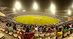

2024 Indian Premier League
This article documents a current Indian Premier League. Information may change rapidly as the event progresses. Initial news reports, scores, or statistics may be unreliable. The last updates to this article may not reflect the most current information. (March 2024) |
| Dates | 22 March 2024 – 26 May 2024 |
|---|---|
| Administrator(s) | Board of Control for Cricket in India (BCCI) |
| Cricket format | Twenty20 |
| Tournament format(s) | Group stage and playoffs |
| Host(s) | India |
| Participants | 10 |
| Matches | 74 |
| Official website | iplt20 |
| Teams | |
|---|---|
| Group A | |
| Group B | |
| Note: Teams are listed per the playing order. Source:[1] | |
The 2024 Indian Premier League (also known as IPL 17 and branded as TATA IPL 2024) is the 17th edition of the Indian Premier League, a franchise Twenty20 cricket league in India, organized by the Board of Control for Cricket in India. The tournament features ten teams competing 74 matches from 22 March to 26 May 2024. It is being held across 13 cities in India with Chennai hosting the opening ceremony and the final.
Chennai Super Kings are the defending champions, having won their fifth title during the previous season after beating Gujarat Titans.
Format
Each team will be playing twice against the teams in their group and against the team in the same row in the other group; and once against the remaining four teams in the other group. After the group stage, the top four teams based on aggregate points qualified for the playoffs. In this stage, the top two teams compete with each other (in a match titled "Qualifier 1"), as do the remaining two teams (in a match titled "Eliminator"). While the winner of Qualifier 1 directly qualified for the final match, the losing team has another chance to qualify for the final match by competing against the winning team of the Eliminator match (in a match titled "Qualifier 2"). The winner of this subsequent Qualifier 2 match will move on to the final match. The team that wins the final match will be crowned the Indian Premier League winners.[2]
Schedule
On 14 February 2024, the chairman of the Indian Premier League, announced that the tournament would take place in India and that the schedule will be finalized post discussion with the Indian government and other agencies. It was also mentioned that the allocation of matches to states will depend on the election schedule for the Lok Sabha Election 2024 to be released by the Election Commission of India.[3][4] On 21 February, it was announced that the schedule will be announced in two halves as the dates of the elections has not been confirmed till then.[5]
A part of the schedule of the season's fixtures was announced on 22 February 2024 which included the schedule for the first 17 days, consisting of 21 matches.[6] The opening match of the tournament was to be played on 22 March at the M. A. Chidambaram Stadium in Chennai between defending champions Chennai Super Kings and the Royal Challengers Bengaluru.[7] The remaining fixtures were announced on 25 March with the last group match to be played between Rajasthan Royals and Kolkata Knight Riders on 19 May at ACA Stadium, Guwahati.[8] It was announced that both Qualifier 1 and Eliminator would be played at the Narendra Modi Stadium, Ahmedabad from 21 to 22 May, and that Qualifier 2 and final would be played in Chennai, with the venue hosting its third IPL final after 2011 and 2012.[9]
Rule changes
Bowlers could now bowl two bouncers per over, as trialed in India's domestic T20 tournament, the 2023–24 Syed Mushtaq Ali Trophy.[10]
Teams
The same 10 teams from the previous season returned with few changes to the team personnel.
| Group | Team | Last year performance[11][12] | Head coach[13] | Captain[13] |
|---|---|---|---|---|
| A | Delhi Capitals | 9th | Ricky Ponting | Rishabh Pant |
| Kolkata Knight Riders | 7th | Chandrakant Pandit | Shreyas Iyer | |
| Lucknow Super Giants | 4th | Justin Langer | KL Rahul | |
| Mumbai Indians | 3rd | Mark Boucher | Hardik Pandya | |
| Rajasthan Royals | 5th | Kumar Sangakkara | Sanju Samson | |
| B | Chennai Super Kings | Champions | Stephen Fleming | Ruturaj Gaikwad |
| Gujarat Titans | Runner-up | Ashish Nehra | Shubman Gill | |
| Punjab Kings | 8th | Trevor Bayliss | Shikhar Dhawan | |
| Royal Challengers Bengaluru | 6th | Faf du Plessis | ||
| Sunrisers Hyderabad | 10th | Daniel Vettori | Pat Cummins |
Personnel changes
The ten franchises retained 173 players for the 2024 IPL season and seven players were traded across teams before the auction.[14] On 11 December 2023, the IPL Governing council released a list of 333 players, including 214 Indian and 119 foreign players who were available for the auction.[15] The auction was held outside India for the first time, at Coca-Cola Arena, Dubai, United Arab Emirates on 19 December 2023.[16][17] 72 players were sold at the auction for a spend of ₹230 crore (US$29 million) including 30 overseas players. Mitchell Starc became the most expensive player in the history of IPL when he was bought by Kolkata Knight Riders for ₹24.75 crore (US$3.1 million) surpassing ₹20.50 crore (US$2.6 million) paid by Sunrisers Hyderabad for Pat Cummins earlier in the same auction and ₹18.50 crore (US$2.3 million) paid by Punjab Kings for Sam Curran in the 2023 auction.[18]
Support staff changes
| Team | Position | Outgoing | Incoming | Refs. |
|---|---|---|---|---|
| Kolkata Knight Riders | Mentor | None | Gautam Gambhir | [19] |
| Lucknow Super Giants | Head coach | Justin Langer | [20] | |
| Punjab Kings | Head of Cricket Development | None | Sanjay Bangar | [21] |
| Royal Challengers Bengaluru | Head coach | Sanjay Bangar | [22] | |
| Sunrisers Hyderabad | Head coach | Brian Lara | Daniel Vettori | [23] |
Captaincy changes
Venues
The league stage is being played at 13 stadiums across India. The opening match was played at M.A. Chidambaram Stadium, Chennai. Delhi Capitals played their first two home games at ACA-VDCA Cricket Stadium, due to the Arun Jaitley Stadium at Delhi being unavailable immediately after hosting the 2024 Women's Premier League. The ACA Cricket Stadium and the HPCA Cricket Stadium will host two home matches each of Rajasthan Royals and Punjab Kings respectively.[30] The first two matches of the playoffs will be played at Ahmedabad with Chennai hosting the final leg of the playoffs including the final.[31]
| India | ||||
|---|---|---|---|---|
| Ahmedabad | Bengaluru | Chennai | Delhi | Dharamshala |
| Gujarat Titans | Royal Challengers Bengaluru | Chennai Super Kings | Delhi Capitals | Punjab Kings |
| Narendra Modi Stadium | M. Chinnaswamy Stadium | M. A. Chidambaram Stadium | Arun Jaitley Stadium | HPCA Cricket Stadium |
| Capacity: 132,000 | Capacity: 35,000 | Capacity: 39,000 | Capacity: 35,200 | Capacity: 21,200 |
| Guwahati | Hyderabad | |||
| Rajasthan Royals | Sunrisers Hyderabad | |||
| ACA Cricket Stadium | Rajiv Gandhi Stadium | |||
| Capacity: 37,800 | Capacity: 55,000 | |||
|  | ||||
| Jaipur | Kolkata | |||
| Rajasthan Royals | Kolkata Knight Riders | |||
| Sawai Mansingh Stadium | Eden Gardens | |||
| Capacity: 25,000 | Capacity: 68,000 | |||

|

| |||
| Lucknow | Mullanpur | Mumbai | Visakhapatnam | |
| Lucknow Super Giants | Punjab Kings | Mumbai Indians | Delhi Capitals | |
| BRSABV Ekana Cricket Stadium | Maharaja Yadavindra Singh Stadium | Wankhede Stadium | ACA–VDCA Cricket Stadium | |
| Capacity: 50,000 | Capacity: 38,000[32] | Capacity: 33,108 | Capacity: 27,500 | |
{kind=link}
{kind=link}
{kind=link}
{kind=link}
{kind=link}
{kind=link}
{kind=link}
{kind=link}
{kind=link}
{kind=link}
{kind=link}
{kind=link}
Opening ceremony
In January 2024, the BCCI invited bids for staging the opening ceremony.[33] The following month, Kasi Viswanathan, the CEO of the Chennai Super Kings told that the opening ceremony would be held in Chennai by virtue of the venue being the home of the defending champions.[7]
The opening ceremony took place on 22 March at the M. A. Chidambaram Stadium in Chennai. Actors Tiger Shroff and Akshay Kumar promoted and performed for a song sequence from their film Bade Miyan Chote Miyan. Singer Sonu Nigam delivered a rendition of "Vande Mataram", while A. R. Rahman and Mohit Chauhan joined for "Maa Tujhe Salaam", while the former went solo for "Jai Ho".[34][35] Chauhan also sang his hit song "Masakali". Singer Neeti Mohan also performed at the event.[36]
League stage
Points table
| Pos | Grp | Team | Pld | W | L | NR | Pts | NRR | |
|---|---|---|---|---|---|---|---|---|---|
| 1 | A | Rajasthan Royals | 9 | 8 | 1 | 0 | 16 | 0.694 | Advance to Qualifier 1 |
| 2 | A | Kolkata Knight Riders | 9 | 6 | 3 | 0 | 12 | 1.096 | |
| 3 | A | Lucknow Super Giants | 10 | 6 | 4 | 0 | 12 | 0.094 | Advance to Eliminator |
| 4 | B | Chennai Super Kings | 10 | 5 | 5 | 0 | 10 | 0.627 | |
| 5 | B | Sunrisers Hyderabad | 9 | 5 | 4 | 0 | 10 | 0.075 | |
| 6 | A | Delhi Capitals | 11 | 5 | 6 | 0 | 10 | −0.442 | |
| 7 | B | Punjab Kings | 10 | 4 | 6 | 0 | 8 | −0.062 | |
| 8 | B | Gujarat Titans | 10 | 4 | 6 | 0 | 8 | −1.113 | |
| 9 | A | Mumbai Indians | 10 | 3 | 7 | 0 | 6 | −0.272 | |
| 10 | B | Royal Challengers Bengaluru | 10 | 3 | 7 | 0 | 6 | −0.415 |
Match summary
| Win | Loss | No result |
- Note: The total points at the end of each group match are listed.
- Note: Click on the points (group matches) or W/L (playoffs) to see the match summary.
| Home team won | Visitor team won |
- Note: Results listed are according to the home (horizontal) and visitor (vertical) teams.
- Note: Click on a result to see a summary of the match.
Fixtures and results
Royal Challengers Bengaluru
173/6 (20 overs) |
v
|
Chennai Super Kings (H)
176/4 (18.4 overs) |
- Royal Challengers Bengaluru won the toss and elected to bat.
- Virat Kohli (Royal Challengers Bengaluru) became the first Indian to reach 12,000 runs in T20s,[38] and the first player to score 1,000 runs against Chennai Super Kings in the IPL.[39]
- Mustafizur Rahman (Chennai Super Kings) took his 50th wicket in the IPL.[40]
- Ravindra Jadeja (Chennai Super Kings) hit his 100th six in the IPL.[41]
Delhi Capitals
174/9 (20 overs) |
v
|
Punjab Kings (H)
177/6 (19.2 overs) |
- Punjab Kings won the toss and elected to field.
- This was the first IPL match played at this venue.[42]
(H) Kolkata Knight Riders
208/7 (20 overs) |
v
|
Sunrisers Hyderabad
204/7 (20 overs) |
- Sunrisers Hyderabad won the toss and elected to field.
- Andre Russell (Kolkata Knight Riders) became the fastest cricketer to hit 200 sixes in the IPL, in terms of balls (1,322).[43] He also holds the record for most 50-plus scores and wicket instances in an IPL match (9 times).[44]
- Heinrich Klassen (Sunrisers Hyderabad) scored his 4,000th run in T20s,[45] and broke the record for most sixes (8) in an IPL innings without registering a four.[44]
(H) Rajasthan Royals
193/4 (20 overs) |
v
|
Lucknow Super Giants
173/6 (20 overs) |
- Rajasthan Royals won the toss and elected to bat.
- Jos Buttler (Rajasthan Royals) achieved the mark of hitting 1,000 fours in T20s.[46]
- KL Rahul (Lucknow Super Giants) equaled MS Dhoni's record for most 50+ scores (24 times) by a wicket-keeper in IPL history.[47]
(H) Gujarat Titans
168/6 (20 overs) |
v
|
Mumbai Indians
162/9 (20 overs) |
- Mumbai Indians won the toss and elected to field.
- Jasprit Bumrah (Mumbai Indians) claimed his 17th three-wicket haul, the most by any bowler in IPL history.[48]
Punjab Kings
176/6 (20 overs) |
v
|
Royal Challengers Bengaluru (H)
178/6 (19.2 overs) |
- Royal Challengers Bengaluru won the toss and elected to field.
- Virat Kohli (Royal Challengers Bengaluru) recorded his 100th 50+ score in T20s.[49]
(H) Chennai Super Kings
206/6 (20 overs) |
v
|
Gujarat Titans
143/8 (20 overs) |
- Gujarat Titans won the toss and elected to field.
- Tushar Deshpande (Chennai Super Kings) took his 100th wicket in T20s.[50]
(H) Sunrisers Hyderabad
277/3 (20 overs) |
v
|
Mumbai Indians
246/5 (20 overs) |
- Mumbai Indians won the toss and elected to field.
- Rohit Sharma completed 200 matches for Mumbai Indians in the IPL.[51]
- Sunrisers Hyderabad broke Royal Challengers Bengaluru's record (263) for the second highest innings total in IPL (277).[52]
- Mumbai Indians broke Rajasthan Royals' record (226) for the highest second innings total in IPL (246). This was also the highest total in a losing cause in an IPL match.[53]
- Travis Head broke the joint record of the fastest fifty for an SRH player, in terms of balls faced (18), previously held by David Warner and Moises Henriques. Later in the match, Abhishek Sharma surpassed him by scoring fifty in 16 balls.[53]
- The match broke the record for highest aggregate scored in an IPL match surpassing 469 runs between Chennai Super Kings and Rajasthan Royals in 2010 (523).[54]
- The number of sixes hit in this match was the most in any T20 match (Total – 38, Hyderabad – 18, Mumbai – 20). The match also recorded the joint-highest total boundaries (69) in an IPL match, equalling the record set by Chennai Super Kings and Rajasthan Royals in 2010.[55]
(H) Rajasthan Royals
185/5 (20 overs) |
v
|
Delhi Capitals
173/5 (20 overs) |
- Delhi Capitals won the toss and elected to field.
- Rishabh Pant became the first player to feature in 100 matches for Delhi Capitals in the IPL.[56][57]
(H) Royal Challengers Bengaluru
182/6 (20 overs) |
v
|
Kolkata Knight Riders
186/3 (16.5 overs) |
- Kolkata Knight Riders won the toss and elected to field.
- Sunil Narine (Kolkata Knight Riders) became the fourth player to play 500 T20 matches.[58]
- Andre Russell (Kolkata Knight Riders) took his 100th wicket in the IPL.[59]
- Venkatesh Iyer (Kolkata Knight Riders) scored his 1000th run in IPL.[60]
(H) Lucknow Super Giants
199/8 (20 overs) |
v
|
Punjab Kings
178/5 (20 overs) |
- Lucknow Super Giants won the toss and elected to bat.
Sunrisers Hyderabad
162/8 (20 overs) |
v
|
Gujarat Titans (H)
168/3 (19.1 overs) |
- Sunrisers Hyderabad won the toss and elected to bat.
(H) Delhi Capitals
191/5 (20 overs) |
v
|
Chennai Super Kings
171/6 (20 overs) |
- Delhi Capitals won the toss and elected to bat.
- MS Dhoni (Chennai Super Kings) became the first wicket-keeper to complete 300 dismissals in T20s,[61] and the first batsman to hit 100 sixes in 19th and 20th overs in IPL.[62]
- Ajinkya Rahane (Chennai Super Kings) hit his 100th six in the IPL.[63]
(H) Mumbai Indians
125/9 (20 overs) |
v
|
Rajasthan Royals
127/4 (15.3 overs) |
- Rajasthan Royals won the toss and elected to field.
- Mumbai Indians became the first team to play 250 matches in IPL history.[64]
- Ravichandran Ashwin (Rajasthan Royals) completed 200 matches in the IPL.[65]
Lucknow Super Giants
181/5 (20 overs) |
v
|
Royal Challengers Bengaluru (H)
153 (19.4 overs) |
- Royal Challengers Bengaluru won the toss and elected to field.
- Nicholas Pooran (Lucknow Super Giants) hit his 100th six in the IPL.[66]
- Virat Kohli (Royal Challengers Bengaluru) played 100 matches at this venue.[67]
- Quinton de Kock (Lucknow Super Giants) scored his 3,000th run in the IPL.[68]
Kolkata Knight Riders
272/7 (20 overs) |
v
|
Delhi Capitals (H)
166 (17.2 overs) |
- Kolkata Knight Riders won the toss and elected to bat.
- Kolkata Knight Riders scored their highest total and the third-highest innings total in IPL history (272).[69]
- Andre Russell (Kolkata Knight Riders) hit his 200th six in the IPL for the Kolkata Knight Riders franchise.[70]
(H) Gujarat Titans
199/4 (20 overs) |
v
|
Punjab Kings
200/7 (19.5 overs) |
- Punjab Kings won the toss and elected to field.
Chennai Super Kings
165/5 (20 overs) |
v
|
Sunrisers Hyderabad (H)
166/4 (18.1 overs) |
- Sunrisers Hyderabad won the toss and elected to field.
Royal Challengers Bengaluru
183/3 (20 overs) |
v
|
Rajasthan Royals (H)
189/4 (19.1 overs) |
- Rajasthan Royals won the toss and elected to field.
- Jos Buttler (Rajasthan Royals) played in his 100th IPL match.[71]
- Virat Kohli (Royal Challengers Bengaluru) scored his 7,500th run in IPL.[72] He also holds the record for most catches in IPL as a non wicket-keeper (110).[73]
- Sanju Samson (Rajasthan Royals) scored his 4,000th run in IPL.[74]
(H) Mumbai Indians
234/5 (20 overs) |
v
|
Delhi Capitals
205/8 (20 overs) |
- Delhi Capitals won the toss and elected to field.
- Jasprit Bumrah (Mumbai Indians) took his 150th wicket in the IPL.[75]
- Rohit Sharma (Mumbai Indians) became the second player to score 1,000 runs against Delhi Capitals in the IPL.[76]
- Mumbai Indians became the first team to win 150th match in the IPL history.[77]
(H) Lucknow Super Giants
163/5 (20 overs) |
v
|
Gujarat Titans
130 (18.5 overs) |
- Lucknow Super Giants won the toss and elected to bat.
- Quinton de Kock (Lucknow Super Giants) played in his 100th IPL match.[78]
- KL Rahul became the first batter to score 1000 runs for Lucknow Super Giants in the IPL.[79]
Kolkata Knight Riders
137/9 (20 overs) |
v
|
Chennai Super Kings (H)
141/3 (17.4 overs) |
- Chennai Super Kings won the toss and elected to field.
- Ravindra Jadeja (Chennai Super Kings) became the fifth player to take 100 catches in the IPL.[80]
Sunrisers Hyderabad
182/9 (20 overs) |
v
|
Punjab Kings (H)
180/6 (20 overs) |
- Punjab Kings won the toss and elected to field.
- Abhishek Sharma (Sunrisers Hyderabad) became the first uncapped player to complete 1,000 runs in the IPL for Sunrisers Hyderabad.[81]
(H) Rajasthan Royals
196/3 (20 overs) |
v
|
Gujarat Titans
199/7 (20 overs) |
- Gujarat Titans won the toss and elected to field.
- Shubman Gill (Gujarat Titans) scored his 3,000th run in IPL.[82]
Royal Challengers Bengaluru
196/8 (20 overs) |
v
|
Mumbai Indians (H)
199/3 (15.3 overs) |
- Mumbai Indians won the toss and elected to field.
- Ishan Kishan (Mumbai Indians) hit his 100th six in the IPL.[83]
- This was 50th win for Mumbai Indians at home in the IPL.[84]
(H) Lucknow Super Giants
167/7 (20 overs) |
v
|
Delhi Capitals
170/4 (18.1 overs) |
- Lucknow Super Giants won the toss and elected to bat.
- Rishabh Pant (Delhi Capitals) became the first player to score 3,000 runs in the IPL for Delhi Capitals.[85]
(H) Punjab Kings
147/8 (20 overs) |
v
|
Rajasthan Royals
152/7 (19.5 overs) |
- Rajasthan Royals won the toss and elected to field.
Lucknow Super Giants
161/7 (20 overs) |
v
|
Kolkata Knight Riders (H)
162/2 (15.4 overs) |
- Kolkata Knight Riders won the toss and elected to field.
Chennai Super Kings
206/4 (20 overs) |
v
|
Mumbai Indians (H)
186/6 (20 overs) |
- Mumbai Indians won the toss and elected to field.
- MS Dhoni (Chennai Super Kings) became the second player to complete 250 matches[86] and to score 5,000 runs for Chennai Super Kings in the IPL.[87]
- Ruturaj Gaikwad (Chennai Super Kings) became the fastest Indian player, in terms of innings, to reach 2,000th run in IPL (57).[88]
- Rohit Sharma (Mumbai Indians) became the first Indian player to hit his 500th six in T20s.[89]
Sunrisers Hyderabad
287/3 (20 overs) |
v
|
Royal Challengers Bengaluru (H)
262/7 (20 overs) |
- Royal Challengers Bengaluru won the toss and elected to field.
- Travis Head (Sunrisers Hyderabad) hit his first IPL century.[90]
- Sunrisers Hyderabad broke their own record (277) for the highest innings total in IPL (287).[91]
- Royal Challengers Bengaluru broke Mumbai Indians' record (246) for the highest second innings total in IPL (262), and South Africa's record (259) for the highest second innings total in T20 cricket. This was also the highest total in a losing cause in both IPL matches and T20 matches.[92]
- The match broke the record for highest aggregate scored in an IPL match surpassing 523 runs between Sunrisers Hyderabad and Mumbai Indians in 2024 (549).[93]
- Sunrisers Hyderabad made 22 sixes, marking the most ever in an IPL innings, surpassing Royal Challengers Bengaluru's previous record of 21 set against Pune Warriors India in 2013.[94]
- The number of sixes hit in this match was the most in any T20 match (Total – 38, Hyderabad – 22, Bengaluru – 16). The match also recorded the highest total boundaries (81) in an IPL match, thus breaking the record of Chennai Super Kings and Rajasthan Royals in 2010, and Sunrisers Hyderabad and Mumbai Indians in 2024.[95]
(H) Kolkata Knight Riders
223/6 (20 overs) |
v
|
Rajasthan Royals
224/8 (20 overs) |
- Rajasthan Royals won the toss and elected to field.
- Sunil Narine (Kolkata Knight Riders) scored his first century in T20s.[96]
- Rajasthan Royals recorded the joint highest successful run chase in IPL history.[97]
(H) Gujarat Titans
89 (17.3 overs) |
v
|
Delhi Capitals
92/4 (8.5 overs) |
- Delhi Capitals won the toss and elected to field.
- Gujarat Titans recorded their lowest innings total in IPL history.[98]
Mumbai Indians
192/7 (20 overs) |
v
|
Punjab Kings (H)
183 (19.1 overs) |
- Punjab Kings won the toss and elected to field.
- Rohit Sharma (Mumbai Indians) became the 2nd player to play 250 IPL matches, after MS Dhoni.[99] He became the fourth batter to complete 6,500 runs in IPL.[100] He also became the top six-hitter for Mumbai Indians, surpassing Kieron Pollard (224 sixes).[101]
Chennai Super Kings
176/6 (20 overs) |
v
|
Lucknow Super Giants (H)
180/2 (19 overs) |
- Lucknow Super Giants won the toss and elected to field.
- MS Dhoni (Chennai Super Kings) completed 5,000th run as a wicket-keeper in the IPL.[102]
Sunrisers Hyderabad
266/7 (20 overs) |
v
|
Delhi Capitals (H)
199 (19.1 overs) |
- Delhi Capitals won the toss and elected to field.
- Sunrisers Hyderabad broke the record held by Nottinghamshire (106) for most runs scored in the Powerplay overs (125) in T20 cricket.[103]
- Travis Head equalled Abhishek Sharma for the fastest half-century by a Sunrisers Hyderabad player in the IPL, in terms of balls faced (16).[103]
- Sunrisers Hyderabad equalled their own record of scoring most sixes by a team in an IPL innings (22).[103]
- Jake Fraser-McGurk scored the fastest half-century by a Delhi Capitals player in the IPL, in terms of balls faced (15), surpassing Chris Morris (17).[103]
(H) Kolkata Knight Riders
222/6 (20 overs) |
v
|
Royal Challengers Bengaluru
221 (20 overs) |
- Royal Challengers Bengaluru won the toss and elected to field.
- Dinesh Karthik (Royal Challengers Bengaluru) became only the 3rd player to play 250 IPL matches.[104]
- Sunil Narine (Kolkata Knight Riders) surpasses Lasith Malinga to become the highest wicket-taker for a single franchise in IPL history with 172 wickets.[105]
- Royal Challengers Bengaluru broke the record of Middlesex for conceding most 200+ scores in T20s (29 times).[106]
- This was 50th win for Kolkata Knight Riders at home in the IPL.[107]
(H) Punjab Kings
142 (20 overs) |
v
|
Gujarat Titans
146/7 (19.1 overs) |
- Punjab Kings won the toss and elected to bat.
- Harshal Patel (Punjab Kings) played in his 100th IPL match.[108]
Mumbai Indians
179/9 (20 overs) |
v
|
Rajasthan Royals (H)
183/1 (18.4 overs) |
- Mumbai Indians won the toss and elected to bat.
- Hardik Pandya completed 100 matches for Mumbai Indians in the IPL.[109]
- Yuzvendra Chahal (Rajasthan Royals) became the first bowler to take 200 wickets in the IPL.[110]
- Yashasvi Jaiswal (Rajasthan Royals) became the youngest batter to score multiple centuries in the IPL.[111]
- Tilak Varma (Mumbai Indians) scored his 1000th run in IPL.[112]
(H) Chennai Super Kings
210/4 (20 overs) |
v
|
Lucknow Super Giants
213/4 (19.3 overs) |
- Lucknow Super Giants won the toss and elected to field.
- Shivam Dube (Chennai Super Kings) scored his 1000th run in IPL.[113]
- Marcus Stoinis (Lucknow Super Giants) broke Paul Valthaty's record (120) for the highest individual score while batting second in an IPL match (124).[114]
(H) Delhi Capitals
224/4 (20 overs) |
v
|
Gujarat Titans
220/8 (20 overs) |
- Gujarat Titans won the toss and elected to field.
- Shubman Gill (Gujarat Titans) played in his 100th IPL match.[115]
Royal Challengers Bengaluru
206/7 (20 overs) |
v
|
Sunrisers Hyderabad (H)
171/8 (20 overs) |
- Royal Challengers Bengaluru won the toss and elected to bat.
- Jaydev Unadkat (Sunrisers Hyderabad) played in his 100th IPL match.[116][117]
- Royal Challengers Bengaluru played their 250th match in the Indian Premier League.[118][119]
(H) Kolkata Knight Riders
261/6 (20 overs) |
v
|
Punjab Kings
262/2 (18.4 overs) |
- Punjab Kings won the toss and elected to field.
- Punjab Kings made the highest successful run-chase in Indian Premier League history, thus breaking the record of Rajasthan Royals (223).[120]
- Punjab Kings also made the highest successful run-chase in T20 cricket, thus breaking the record of South Africa (259).[121]
- Punjab Kings made 24 sixes, marking the most ever in an IPL innings, surpassing Sunrisers Hyderabad's previous record of 22 set against Royal Challengers Bengaluru in 2024.[122]
- The number of sixes hit in this match was the most in any T20 match (Total – 42, Kolkata – 18, Punjab – 24).[123]
(H) Delhi Capitals
257/4 (20 overs) |
v
|
Mumbai Indians
247/9 (20 overs) |
- Mumbai Indians won the toss and elected to field.
- Ishan Kishan (Mumbai Indians) played in his 100th IPL match.[124]
- Delhi Capitals scored their highest total in IPL history.[125]
- Suryakumar Yadav (Mumbai Indians) hit his 100th six for the Mumbai Indians in the IPL.[126]
(H) Lucknow Super Giants
196/5 (20 overs) |
v
|
Rajasthan Royals
199/3 (19 overs) |
- Rajasthan Royals won the toss and elected to field.
(H) Gujarat Titans
200/3 (20 overs) |
v
|
Royal Challengers Bengaluru
206/1 (16 overs) |
- Royal Challengers Bengaluru won the toss and elected to field.
- Will Jacks (Royal Challengers Bengaluru) hit his first IPL century.[127]
(H) Chennai Super Kings
212/3 (20 overs) |
v
|
Sunrisers Hyderabad
134 (18.5 overs) |
- Sunrisers Hyderabad won the toss and elected to field.
- Daryl Mitchell (Chennai Super Kings) took his 100th catch in T20s,[128] and equalled the record of taking the most catches in an IPL innings (5).[129]
- MS Dhoni became the first player to be part of 150 victories in the IPL.[130]
- This was the 50th win for Chennai Super Kings at home in the IPL.[131]
Delhi Capitals
153/9 (20 overs) |
v
|
Kolkata Knight Riders (H)
157/3 (16.3 overs) |
- Delhi Capitals won the toss and elected to bat.
Mumbai Indians
144/7 (20 overs) |
v
|
Lucknow Super Giants (H)
145/6 (19.2 overs) |
- Lucknow Super Giants won the toss and elected to field.
(H) Chennai Super Kings
162/7 (20 overs) |
v
|
Punjab Kings
163/3 (17.5 overs) |
- Punjab Kings won the toss and elected to field.
Playoffs
The Indian Premier League playoffs will be held from 21 to 26 May 2023. The Qualifier 1 and Eliminator matches will be played at the Narendra Modi Stadium, Ahmedabad. The Qualifier 2 and the final will be played at the M. A. Chidambaram Stadium, Chennai.[31]
Bracket
| Qualifier 1 | Qualifier 2 | Final | |||||||||||
| 21 May 2024 – Ahmedabad | 26 May 2024 – Chennai | ||||||||||||
| 1 | League Stage 1 | Q1W | Qualifier 1 Winner | ||||||||||
| 2 | League Stage 2 | 24 May 2024 – Chennai | Q2W | Qualifier 2 Winner | |||||||||
| Q1L | Qualifier 1 Loser | ||||||||||||
| Eliminator | EW | Eliminator Winner | |||||||||||
| 22 May 2024 – Ahmedabad | |||||||||||||
| 3 | League Stage 3 | ||||||||||||
| 4 | League Stage 4 | ||||||||||||
Qualifier 1
Eliminator
Qualifier 2
Final
Marketing
Title sponsorship
The Tata Group renewed their contract as the title sponsors of the Indian Premier League for a tenure of 5 years (2024–28) for ₹2,500 crore (US$310 million) — the highest-ever sponsorship amount in the history of the league. The TATA Group previously held the title sponsorship rights for the IPL in 2022 and 2023.[132]
Broadcasting
Star Sports is the official TV broadcaster of the season, while JioCinema is the official digital broadcaster.[133]
Statistics
Most runs
- Orange Cap holder
| Runs | Player | Team | Inns. | HS | Ave | SR | 100/50 | 4s | 6s |
|---|---|---|---|---|---|---|---|---|---|
| 509 | Ruturaj Gaikwad | Chennai Super Kings | 10 | 108* | 63.62 | 146.68 | 1/4 | 53 | 15 |
| 500 | Virat Kohli | Royal Challengers Bengaluru | 10 | 113* | 71.43 | 147.49 | 1/5 | 46 | 20 |
| 418 | Sai Sudharsan | Gujarat Titans | 84* | 46.44 | 135.71 | 0/2 | 43 | 9 | |
| 406 | KL Rahul | Lucknow Super Giants | 82 | 40.60 | 143.46 | 0/3 | 37 | 15 | |
| 398 | Rishabh Pant | Delhi Capitals | 11 | 88* | 44.22 | 158.56 | 0/3 | 31 | 24 |
Last updated: 1 May 2024, Source: ESPNcricinfo[134]
| |||||||||
Most wickets
- Purple Cap holder
| Wkts. | Player | Team | Mat | Ov | Runs | BBI | Ave | Econ | SR | 4W | 5W | Dots |
|---|---|---|---|---|---|---|---|---|---|---|---|---|
| 14 | ||||||||||||
| Jasprit Bumrah | Mumbai Indians | 10 | 40 | 256 | 5/21 | 18.28 | 6.40 | 17.14 | 0 | 1 | 115 | |
| Mustafizur Rahman | Chennai Super Kings | 9 | 34.2 | 318 | 4/29 | 22.71 | 9.26 | 13.00 | 1 | 0 | 73 | |
| Harshal Patel | Punjab Kings | 10 | 33 | 338 | 3/15 | 24.14 | 10.24 | 14.57 | 0 | 0 | 57 | |
| 13 | Matheesha Pathirana | Chennai Super Kings | 6 | 22 | 169 | 4/28 | 13.00 | 7.68 | 10.15 | 1 | 0 | 54 |
| T Natarajan | Sunrisers Hyderabad | 7 | 28 | 252 | 4/19 | 19.38 | 9.00 | 12.92 | 1 | 0 | 58 | |
Last updated: 1 May 2024, Source: ESPNcricinfo[135]
| ||||||||||||
Most Valuable Player
| Points | Player | Team | Matches | ||||||||||
|---|---|---|---|---|---|---|---|---|---|---|---|---|---|
| 317.5 | Sunil Narine | Kolkata Knight Riders | 9 | ||||||||||
| 211.5 | Phil Salt | Kolkata Knight Riders | |||||||||||
| 200.0 | Virat Kohli | Royal Challengers Bengaluru | 10 | ||||||||||
| 198.0 | Rishabh Pant | Delhi Capitals | 11 | ||||||||||
| 192.5 | Ruturaj Gaikwad | Chennai Super Kings | 10 | ||||||||||
Last updated: 1 May 2024, Source: IPLT20 website[136]
| |||||||||||||
Most boundaries
| Total Fours | ||||
|---|---|---|---|---|
| 1504 | ||||
| Fours | Player | Team | Innings | |
| 53 | Ruturaj Gaikwad | Chennai Super Kings | 10 | |
| 46 | Virat Kohli | Royal Challengers Bangalore | 10 | |
| 44 | Phil Salt | Kolkata Knight Riders | 9 | |
| 43 | Sai Sudharsan | Gujarat Titans | 10 | |
| 40 | 2 players | 9/8 | ||
Last updated: 1 May 2024, Source: CricTracker[137]
| ||||
| Total Sixes | ||||
|---|---|---|---|---|
| 875 | ||||
| Sixes | Player | Team | Innings | |
| 28 | Heinrich Klaasen | Sunrisers Hyderabad | 9 | |
| 27 | Abhishek Sharma | |||
| 26 | Shivam Dube | Chennai Super Kings | 10 | |
| 24 | Sunil Narine | Kolkata Knight Riders | 9 | |
| Rishabh Pant | Delhi Capitals | 11 | ||
Last updated: 1 May 2024, Source: CricTracker[138]
| ||||
References
- ^ "IPL 2024 Groups List: All Teams Matchup | Group A, Group B - ICC Cricket World Cup". 7 October 2023. Retrieved 30 March 2024.
- ^ "IPL 2024: What's the playoff format? Know all about IPL 17 qualifiers, eliminators and grand finale". Financial Express. 21 March 2014. Retrieved 1 April 2024.
- ^ "'IPL most likely to start from...': Chairman Arun Dhumal says BCCI to work with government over fixtures". The Times of India. 14 February 2024. Retrieved 15 February 2024.
- ^ "IPL 2024 to stay in India, assures IPL chairman Arun Dhumal". InsideSport. 14 February 2024. Retrieved 15 March 2024.
- ^ ""IPL 2024 schedule will be announced in 2 halves" - Chairman Arun Dhumal provides a crucial update regarding the upcoming season". Sportskeeda. 21 February 2024. Retrieved 1 March 2024.
- ^ "IPL 2024 Schedule: Match Dates, Teams, Stadium, Venues and Other Details". Jagran Josh. 21 February 2024. Retrieved 22 March 2024.
- ^ Jump up to: a b "IPL 2024 to kick off in Chennai on March 22". Cricbuzz. 21 February 2024. Retrieved 22 March 2024.
- ^ "IPL 2024 Full Schedule: Fixtures, date and time final in Chennai". India Today. 25 March 2024. Retrieved 25 March 2024.
- ^ "IPL 2024 Schedule: Chennai to host Qualifier 2 and final on May 24 and 26; Qualifier 1 and Eliminator in Ahmedabad". The Times of India. 25 March 2024. Retrieved 25 March 2024.
- ^ "IPL to allow two bouncers per over". ESPNcricinfo. 19 December 2023. Retrieved 1 April 2024.
- ^ "TATA IPL 2023, Final CSK Vs GT - Match Report". Indian Premier League. 31 May 2023. Retrieved 1 December 2023.
- ^ "IPL 2023 standings". ESPNcricinfo. Retrieved 1 December 2023.
- ^ Jump up to: a b "IPL All Teams Captains 2024: Complete List of Indian Premier League Captains and Coaches". Jagran Josh. 23 March 2024. Retrieved 1 April 2024.
- ^ "IPL 2024 Player Retentions List". Indian Premier League. Retrieved 1 April 2024.
- ^ "IPL 2024 Player Auction list announced". Indian Premier League. Retrieved 1 April 2024.
- ^ "IPL 2024 auction scheduled for December 19 in Dubai". ESPNcricinfodate=19 December 2023. Retrieved 1 April 2024.
- ^ "IPL 2024 Auction Live Streaming: When and where to watch IPL Auction live on TV and online". Hindustan Times. 19 December 2023. Retrieved 1 April 2024.
- ^ "Starc shatters Cummins' record for most expensive player at IPL auction". ESPNcricinfo. 19 December 2023. Retrieved 1 April 2024.
- ^ "Gautam Gambhir returns home to Kolkata Knight Riders as Mentor". Kolkata Knight Riders. 22 November 2023. Retrieved 1 April 2024.
- ^ "Former Australian coach Justin Langer appointed as head coach of Lucknow Super Giants". Lucknow Super Giants. 14 May 2023. Retrieved 14 July 2023.
- ^ "Welcome Back Sanjay Bangar as Head of Cricket Development!". Punjab Kings. 8 December 2023. Retrieved 1 April 2024.
- ^ "Andy Flower appointed Head Coach of RCB". Royal Challengers Bengaluru. 4 August 2023. Retrieved 1 April 2024.
- ^ "Daniel Vettori named new Sunrisers Hyderabad head coach". ESPNcricinfo. 24 November 2023. Retrieved 1 April 2024.
- ^ "Gujarat Titans Announces Shubman Gill as captain". Gujarat Titans. 27 November 2023. Retrieved 1 April 2024.
- ^ "Shreyas Iyer returns as Captain of KKR, Nitish Rana Named Vice-Captain". Kolkata Knight Riders. 14 December 2023. Retrieved 1 April 2024.
- ^ "Hardik Pandya announced as captain for the IPL 2024 season". Mumbai Indians. 15 December 2023. Retrieved 15 December 2023.
- ^ "Rishabh Pant will captain Delhi Capitals in IPL 2024". Delhi Capitals. 19 March 2024. Retrieved 19 March 2024.
- ^ "Pat Cummins to lead Sunrisers Hyderabad in IPL 2024". ESPN Cricinfo. 4 March 2024. Retrieved 4 March 2024.
- ^ "Ruturaj Gaikwad Takes Over Chennai Super Kings Captaincy From MS Dhoni". Indian Premier League. Retrieved 21 March 2024.
- ^ "Fixtures and schedule, Indian Premier League 2024". Cricbuzz. Retrieved 1 April 2024.
- ^ Jump up to: a b "IPL playoffs in Ahmedabad and Chennai; Chepauk to host final on May 26". Cricbuzz. 25 March 2024. Retrieved 1 April 2024.
- ^ "IPL 2024: Punjab Kings to play home games at newly-developed stadium in Mullanpur". Sportstar. 26 February 2024. Retrieved 27 February 2024.
- ^ "BCCI announces the release of Request for Proposals for staging the Opening Ceremony for the Indian Premier league Season 2024". iplt20.com. Retrieved 29 March 2024.
- ^ "IPL 2024 Opening Ceremony highlights: Akshay Kumar, Tiger Shroff give epic performance, fans hail AR Rahman's medley". Hindustan Times. 22 March 2024. Retrieved 22 March 2024.
- ^ "Watch: IPL 2024 begins with Bollywood-inspired opening ceremony". The Times of India. 22 March 2024. Retrieved 29 March 2024.
- ^ Chatterjee, Sanghamitra (23 March 2024). "IPL opening ceremony 2024: Akshay Kumar and Tiger Shroff shake a leg; Sonu Nigam and A.R. Rahman enthral audience". The Telegraph. Retrieved 29 March 2024.
- ^ "IPL Points Table | IPL Standings | IPL Ranking". ESPNcricinfo. Retrieved 19 April 2024.
- ^ "Virat Kohli becomes first Indian to 12000 runs in T20 cricket". The Times of India. 22 March 2024. Retrieved 1 April 2024.
- ^ "IPL 2024, CSK vs RCB: Virat Kohli matches David Warner in elite feat". India Today. Retrieved 24 March 2024.
- ^ "Mustafizur returns 4-30 for CSK in IPL 2024 opener". The Business Standard. 22 March 2024. Retrieved 22 March 2024.
- ^ "Sir For A Reason! Ravindra Jadeja Joins Elite Six-Hitting List In IPL 2024 Match Against RCB". Times Now. 23 March 2024. Retrieved 24 March 2024.
- ^ "Inside the Maharaja Yadavindra Singh Stadium, Punjab's new open-air venue in Mullanpur". ESPNcricinfo. 23 March 2024. Retrieved 1 April 2024.
- ^ "KKR vs SRH: Russell smashes Gayle's record, becomes fastest to 200 IPL sixes". The Times of India. 23 March 2024. Retrieved 1 April 2024.
- ^ Jump up to: a b "Comparing Russell's 64 vs Klaasen's 63 in KKR vs SRH IPL thriller; feat 15 sixes". India TV. Retrieved 23 March 2024.
- ^ "IPL 2024: Dre Russ and Klaasen's blazing knocks, Harshit's heroic final over and other top moments from KKR-SRH thriller". Firstpost. 23 March 2024. Retrieved 1 April 2024.
- ^ "IPL 2024: 11 Batsmen With 1000 Fours In T20s". Times Now. 25 March 2024. Retrieved 1 April 2024.
- ^ "IPL 2024: 3 records that were broken in RR's impressive 20-run win vs LSG". Sportskeeda. 25 March 2024. Retrieved 1 April 2024.
- ^ "Jasprit Bumrah makes stunning IPL comeback, registers new record". The Times of India. 24 March 2024. Retrieved 25 March 2024.
- ^ "RCB vs PBKS, IPL 2024: Virat Kohli records 100th fifty-plus score in T20 cricket". Sportstar. 25 March 2024. Retrieved 25 March 2024.
- ^ "IPL 2024: CSK remain faultless in title defence, Gill handed 1st loss as GT captain". India Today. 29 March 2024. Retrieved 1 April 2024.
- ^ "Rohit Sharma plays 200th IPL match for Mumbai Indians". Indian Express. 27 March 2024. Retrieved 28 March 2024.
- ^ "Sunrisers Hyderabad score highest team total in IPL history, post 277/5 against Mumbai Indians". Indian Express. 27 March 2024. Retrieved 27 March 2024.
- ^ Jump up to: a b "Complete list of records broken during SRH vs MI run fest in Hyderabad". Firstpost. 28 March 2024. Retrieved 1 April 2024.
- ^ "SRH vs MI: All records set and broken". Rediff. 29 March 2024. Retrieved 1 April 2024.
- ^ "Twenty20 Matches - Most sixes in a match". ESPNcricinfo. 27 March 2024. Retrieved 1 April 2024.
- ^ "Rishabh Pant becomes first player to feature in 100 matches for Delhi Capitals". Sportstar. 28 March 2024. Retrieved 5 April 2024.
- ^ "IPL 2024: Rishabh Pant gets special 100 jersey ahead milestone match for Delhi Capitals". India Today. 28 March 2024. Retrieved 5 April 2024.
- ^ "IPL 2024: Sunil Narine set to complete massive personal milestone vs RCB". India Today. 29 March 2024. Retrieved 29 March 2024.
- ^ "Andre Russell reaches 100 wickets milestone in IPL". ANI. Retrieved 30 March 2024.
- ^ "KKR batter Venkatesh Iyer completes 1,000 runs in IPL career". ANI. Retrieved 30 March 2024.
- ^ "MS Dhoni becomes first wicketkeeper to complete 300 dismissals in T20 cricket". ANI News. 1 April 2024. Retrieved 1 April 2024.
- ^ "MS Dhoni becomes first batter to hit 100 sixes in 19th and 20th overs; next best is Pollard with 57". The Indian Express. 5 April 2024. Retrieved 6 April 2024.
- ^ "CSK's Ajinkya Rahane completed 100 IPL sixes". Patrika. 31 March 2024. Retrieved 2 April 2024.
- ^ "Mumbai Indians First Team In IPL History To Achieve This Feat". The Times of India. 1 April 2024. Retrieved 1 April 2024.
- ^ "MI vs RR, IPL 2024: R Ashwin becomes tenth player to play 200 matches in Indian Premier League". Sportstar. Retrieved 1 April 2024.
- ^ "Nicholas Pooran Hits A Massive 106m Six, Joins 'Club 100' In IPL". The Times of India. 2 April 2024. Retrieved 2 April 2024.
- ^ "Kohli plays his 100th T20 match at M. Chinnaswamy stadium during RCB vs LSG". Sportstar. 3 April 2024. Retrieved 2 April 2024.
- ^ "IPL 2024: De Kock reaches 3000 IPL runs during RCB vs LSG". Firstpost. 2 April 2024. Retrieved 2 April 2024.
- ^ "Sunil Narine carnage helps KKR post 2nd-highest total in IPL history". India Today. 3 April 2024. Retrieved 3 April 2024.
- ^ "KKR all-rounder Andre Russell completes 200 sixes in IPL". The Economic Times. Retrieved 4 April 2024.
- ^ "Jos Buttler set to create history in RR vs RCB match, will become first English player to reach this iconic IPL milestone". The Sports Tak. 6 April 2024. Retrieved 11 April 2024.
- ^ "Virat Kohli ends Jaipur jinx with fifty, goes past 7500 runs in IPL". India Today. 6 April 2024. Retrieved 11 April 2024.
- ^ "Virat Kohli makes record for most catches by a fielder in IPL and most hundreds in a losing cause". Firstpost. Retrieved 7 April 2024.
- ^ "Sanju Samson breaches 4000 run mark in IPL". CricTracker. 6 April 2024. Retrieved 6 April 2024.
- ^ "Jasprit Bumrah Becomes First Indian Pacer To Take 150 IPL Wickets". ETV Bharat. 7 April 2024. Retrieved 7 April 2024.
- ^ "Rohit Sharma becomes 2nd player after Virat Kohli to create this IPL record". The Economic Times. 7 April 2024. Retrieved 27 April 2024.
- ^ "Mumbai Indians script history, become first team to achieve 150 wins in T20 cricket". India TV News. 7 April 2024. Retrieved 29 April 2024.
- ^ "Quinton de Kock Completes 100 Matches in Indian Premier League, Achieves Feat During LSG vs GT IPL 2024 Match". LatestLY. Retrieved 8 April 2024.
- ^ "LSG vs GT: KL Rahul makes history, becomes first Lucknow batter with 1000 IPL runs". India Today. Retrieved 7 April 2024.
- ^ "CSK vs KKR - Ravindra Jadeja joins Kohli, Rohit, Raina in IPL's 100-catches club". The Hindu. Retrieved 9 April 2024.
- ^ "Abhishek Sharma creates history, becomes first player to achieve this feat for SRH". Cricket Addictor. 9 April 2024. Retrieved 9 April 2024.
- ^ "'Crown Prince' Shubman Gill Shatters Yet Another 'King' Virat Kohli Record; Becomes Youngest To ..." News18. Retrieved 11 April 2024.
- ^ "100 sixes for MI: Ishan Kishan regains old form". India Today. Retrieved 11 April 2024.
- ^ "MI vs RCB stats, IPL 2024: Mumbai Indians win 50th game at Wankhede as Bumrah breaks records". Firstpost. 12 April 2024. Retrieved 29 April 2024.
- ^ "Rishabh Pant becomes quickest Indian player to complete 3000 IPL runs". Jagran. 12 April 2024. Retrieved 12 April 2024.
- ^ "MS Dhoni matches Virat Kohli, becomes second to play 250 T20 matches for single team". India Today. 14 April 2024. Retrieved 14 April 2024.
- ^ "MS Dhoni completes 5000 runs for Chennai Super Kings". Sportstar. 14 April 2024. Retrieved 14 April 2024.
- ^ "Ruturaj Gaikwad Creates History; Becomes Fastest Indian To Achieve Massive Feat". Times Now. 14 April 2024. Retrieved 14 April 2024.
- ^ "Rohit Sharma becomes first Indian to hit 500 sixes in T20 cricket". India Today. 14 April 2024. Retrieved 14 April 2024.
- ^ "Travis Head's Century in SRH vs RCB Blockbuster IPL Game Celebrated With Hilarious Memes". News18. 15 April 2024. Retrieved 16 April 2024.
- ^ "Sunrisers Hyderabad's 287/3 vs RCB the highest IPL total in history: Check top 5 scores as SRH better their own record". Hindustan Times. 15 April 2024. Retrieved 15 April 2024.
- ^ "Many Firsts! SRH-RCB Blockbuster Rewrites IPL Record Books In Run-Fest". Times of India. Retrieved 15 April 2024.
- ^ "RCB vs SRH HIGHLIGHTS, IPL 2024: Sunrisers thump Bengaluru with record-breaking T20 score, Karthik's 83 in vain". The Indian Express. 15 April 2024. Retrieved 15 April 2024.
- ^ "IPL 2024: Sunrisers Hyderabad Demolish IPL Record For Most Sixes in an Innings With 22 Sixes vs RCB". News18. Retrieved 15 April 2024.
- ^ "549 runs and 81 boundaries: Sunrisers Hyderabad and Royal Challengers Bengaluru tear apart record books, write their own". Hindustan Times. 16 April 2024. Retrieved 16 April 2024.
- ^ "Sunil Narine scores first century of his career in KKR vs RR match". Firstpost. Retrieved 15 April 2024.
- ^ "Highest successful IPL run-chases: Rajasthan Royals equals record vs KKR in IPL 2024". The Indian Express. 16 April 2024. Retrieved 16 April 2024.
- ^ "IPL Lowest Total: Where does Gujarat Titans' 89 all out vs Delhi Capitals rank in list of lowest ever IPL scores". The Indian Express. 17 April 2024. Retrieved 17 April 2024.
- ^ "Rohit Sharma Set to Play Landmark 250th Match in IPL History; Becomes 2nd Man to do so After MS Dhoni". News18. Retrieved 18 April 2024.
- ^ "IPL 2024: Rohit Sharma Becomes Fourth Batter to 6500 Runs in IPL; Pips Kieron Pollard to be the Most Prolific Six-hitter for MI". News18. Retrieved 18 April 2024.
- ^ "Rohit Sharma tops Mumbai Indians' six-hitting chart in IPL". The Times of India. 18 April 2024. Retrieved 18 April 2024.
- ^ "Aged 42, MS Dhoni Pockets Another Massive IPL Milestone". The Times of India. 19 April 2024. Retrieved 20 April 2024.
- ^ Jump up to: a b c d "125 in 6 overs: Head and Sunrisers shatter T20 powerplay records". ESPNcricinfo. Retrieved 21 April 2024.
- ^ "Dinesh Karthik becomes 3rd player after Dhoni, Rohit to play 250 IPL matches". India Today. 21 April 2024. Retrieved 21 April 2024.
- ^ "Sunil Narine becomes bowler with most wickets for single franchise in IPL history". ANI. Retrieved 21 April 2024.
- ^ "Struggling RCB go past Middlesex for this unwanted record in T20 cricket history". Times of India. 21 April 2024. Retrieved 21 April 2024.
- ^ "Kolkata Knight Riders' IPL Records and Stats at Eden Gardens Stadium, Kolkata". CricTracker. 21 April 2024. Retrieved 29 April 2024.
- ^ "IPL 2024: Match 37, PBKS vs GT - Stats Preview of Players' Records and Approaching Milestones". CricTracker. 21 April 2024. Retrieved 21 April 2024.
- ^ "IPL 2024: Hardik Pandya plays 100th match for Mumbai Indians". Sportstar. 22 April 2024. Retrieved 23 April 2024.
- ^ "Chahal becomes first bowler to take 200 wickets in IPL". ESPNcricinfo. 22 April 2024. Retrieved 22 April 2024.
- ^ "Yashasvi Jaiswal becomes youngest to slam multiple IPL tons". Times Now. 23 April 2024.
- ^ "MI's Tilak Varma brings up 1,000 IPL runs during RR clash". ANI News. Retrieved 22 April 2024.
- ^ "Shivam Dube completes 1,000 runs for Chennai Super Kings in IPL". Hindustan Times. 24 April 2024. Retrieved 24 April 2024.
- ^ "CSK vs LSG: Stoinis records highest individual score in an IPL run chase". Sportstar. 23 April 2024. Retrieved 25 April 2024.
- ^ "Shubman Gill thrilled to play 100th IPL match in DC vs GT: Still a long way to go". India Today. 24 April 2024. Retrieved 24 April 2024.
- ^ "IPL 2024: 100वें मैच में चमके जयदेव उनादकट, कराई सनराइजर्स हैदराबाद की वापसी" [IPL 2024: Jaydev Unadkat shines in 100th match, makes Sunrisers Hyderabad comeback]. Times Now Navbharat. 25 April 2024. Retrieved 25 April 2024.
- ^ "Jaydev Unadkat Completes 100 Matches in Indian Premier League, Achieves Feat During SRH vs RCB IPL 2024 Match". LatestLY. 25 April 2024. Retrieved 25 April 2024.
- ^ "IPL 2024: RCB Secure Win In 250th IPL Match". myKhel. Retrieved 25 April 2024.
- ^ "IPL 2024: RCB Plays 250th IPL matches". The Daily Guardian. Retrieved 25 April 2024.
- ^ "Punjab to Rajasthan: Highest successful run-chase in IPL, T20 cricket". Business Standard. Retrieved 26 April 2024.
- ^ "Highest successful IPL, T20 run-chases: Punjab Kings break world record in 262 chase vs Kolkata Knight Riders Bairstow hundred". The Indian Express. 26 April 2024. Retrieved 26 April 2024.
- ^ "IPL 2024: Match between KKR vs PBKS break record of most sixes in T20". ANI News. Retrieved 26 April 2024.
- ^ "IPL 2024: KKR vs PBKS match breaks record of most sixes hit in a T20 match". SportStar. 26 April 2024. Retrieved 26 April 2024.
- ^ "Ishan Kishan Completes 100 Matches in Indian Premier League, Achieves Feat During DC vs MI IPL 2024 Match". LatestLY. 27 April 2024. Retrieved 27 April 2024.
- ^ "DC vs MI: Delhi Capitals registers its highest total during IPL 2024 match against Mumbai Indians". Sportstar. 27 April 2024. Retrieved 29 April 2024.
- ^ "Suryakumar Yadav Needs 2 Sixes To Join Rohit Sharma, Hardik Pandya In Elite List". Times Now. 27 April 2024. Retrieved 27 April 2024.
- ^ "GT vs RCB: Virat Kohli's reaction to Will Jacks's fiery century goes viral". India Today. 28 April 2024. Retrieved 28 April 2024.
- ^ "CSK vs SRH, IPL 2024 highlights: Tushar Deshpande stuns Hyderabad with career-best figures as Chennai thrash Sunrisers". Hindustan Times. 28 April 2024. Retrieved 29 April 2024.
- ^ "Daryl Mitchell equals record of taking most catches in an IPL innings". Sportstar. 28 April 2024. Retrieved 29 April 2024.
- ^ "CSK vs SRH: MS Dhoni sets new IPL record, becomes first player to be part of 150 victories". India Today. Retrieved 29 April 2024.
- ^ "CSK vs SRH : चेन्नई सुपर किंग्स ने चेन्नई में हासिल की 50वीं जीत, ऐसा करने वाली तीसरी टीम बनी" [CSK vs SRH: Chennai Super Kings achieved 50th win in Chennai, became the third team to do so]. Hindustan. Retrieved 29 April 2024.
- ^ "TATA Group secures title sponsorship rights for IPL 2024-28". Indian Premier League. 20 January 2024. Retrieved 1 March 2024.
- ^ "The business of IPL is in playing the long game". Hindustan Times. 21 March 2024. Retrieved 31 March 2024.
- ^ "Indian Premier League, 2024 batting most runs career Records". ESPNcricinfo. Retrieved 1 May 2024.
- ^ "Indian Premier League, 2024 bowling most wickets career Records". ESPNcricinfo. Retrieved 1 May 2024.
- ^ "Indian Premier League 2024 Stats -Most Valuable Player". Indian Premier League. Retrieved 12 April 2024.
- ^ "IPL 2024 Most Fours | Most Fours in IPL 2024 Players List". CricTracker. Retrieved 1 May 2024.
- ^ "IPL 2024 Most Sixes | Most Sixes in IPL 2024 Players List". CricTracker. Retrieved 1 May 2024.